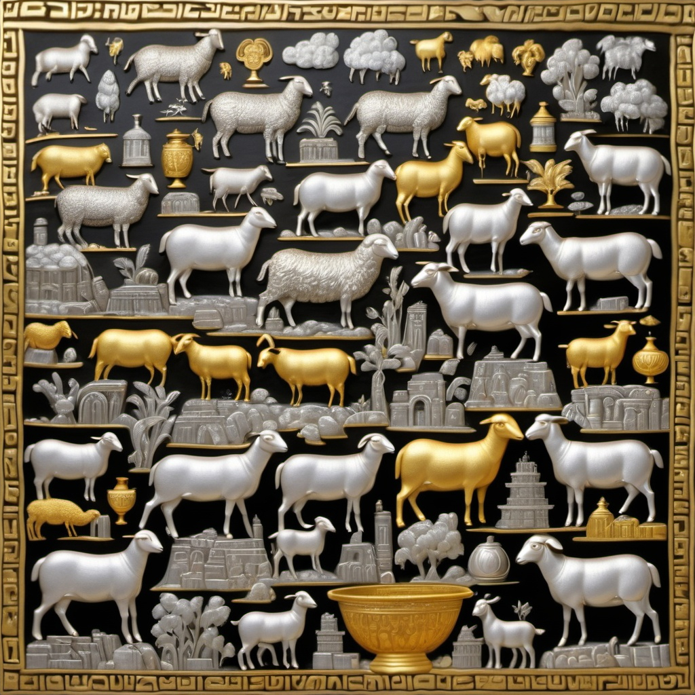

Die Geschichte Abrams beginnt mit einer Erzählung aus dem Leben seines Vorfahren, Noahs. Zur Erinnerung: Noah hatte 3 Sähnne: Sem, Ham und Japheth. Im Voraus wird schon angedeutet, dass Ham der Vater Kanaans sei. Er ist der einzige Sohn der auf diese Weise beschrieben wird, wobei es nicht lange dauert, bis wir den Grund herausfinden. Ab Mose 9, Verse 20, erfahren wir, dass Noah Ackermann ist, und pflanzt Weinberge. Eines Tages trinkte er etwas zu viel von dem Wein und wurde betrunken. So lag er in der Hütte, zumindest teilweise entblößt. Noahs jüngster Sohn Ham entdeckte ihn in dem Zustand und informierte seine Brüder Sem und Japheth. Sem ist übrigens der ältere der 3 Brüder. Also bedeckten Sem und Japeth ihren Vater, ohne ihn direkt anzusehen; so wurde der Stolz Noahs dabei unverletzt. Ganz anders war es aber im Fall Hams: Als Noah entdeckte, wie Ham die Situation behandelt hatte reagierte er mit Zorn.
„Als nun Noah erwachte von seinem Wein und erfuhr, was ihm sein jüngster Sohn getan hatte, sprach er: Verflucht sei Kanaan und sei ein Knecht aller Knechte unter seinen Brüdern! und sprach weiter: Gelobt sei der HErr, der Gott Sems; und Kanaan sei sein Knecht! Gott breite Japheth aus, und lasse ihn wohnen in den Hütten des Sem; und Kanaan sei sein Knecht!” Im Mose Kapitel 10, bekommen wir Details über die Nachkommen von den drei Söhnen. In Mose Kapitel 11, bekommen wir aber noch mehr Details über die Nachkommen Sems, einschließlich die Jahre deren Geburten und Tode. Detaillierte Informationen über den Stammbaum bedeuten, dass die darin zu befindenden Personen die Gunst Gottes in der Geschichte haben, bzw. die Hauptliene der Geschichte ausmachen.
Ham hatte die folgenden Kinder: Chus, Mizraim, Put und Kanaan; Kanaan hatte Sidon und Heth und viele mehr. Ihre Blutlinie machte die Geschlechter der Kanaaniter aus, deren Grenzen „...von Sidon an durch Gerar bis gen Gaza, bis man kommt gen Sodom, Gomorra, Adama, Zeboim und bis gen Lasa” liefen. Die Hauptlinie Sems, die zu Abram führte war: Arphachsad, Salah, Eber, Peleg, Regu, Serug, Nahor, Tharah und Abram. Laut verfügbarer Details, lag 290 Jahre Zeit zwischen der Geburt Sems Sohn, Arphachsad, und seinem Nachkomen, Abram. Bezüglich warum diese Informationen von Bedeutung ist, die Vorahnung von Mose 9 wird jetzt geltend gemacht, denn wir erfahren, dass Gott Abram und dessen Nachkommen das Land Kanaan, also das Land der Nachkommen Hams, geben will. So wird Noahs Wunsch, Hams Nachkommen zu Knechten der Nachkommen Sems zu machen, langsam zur Realität.
In Mose 12, Verse 1 - 3 lesen wir: „Und der HErr sprach zu Abram: Gehe aus deinem Vaterlande und von deiner Freundschaft und aus deines Vaters Hause in ein Land, das ich dir zeigen will. Und ich will dich zum großen Volk machen und will dich segnen und dir einen großen Namen machen, und sollst ein Segen sein. Ich will segnen, die dich segnen, und verfluchen, die dich verfluchen; und in dir sollen gesegnet werden alle Geschlechter auf Erden.” Abram nahm sein Weib, Sarai, und Lot, den Sohn seines gestorbenen Bruders, und die drei zogen nach Kanaan. Dort angekommen, wird Abram von Gott besucht: „Da erschien der HErr dem Abram und sprach: Deinem Samen will ich dieses Land geben.” In Mose 13, Versen 14 - 18 beteuert Gott nochmals: „Denn alles Land, das du siehst, will ich dir geben und deinem Samen ewiglich; und ich will deinen Samen machen wie den Staub auf Erden. Kann ein Mensch den Staub auf Erden zählen, der wird auch deinen Samen zählen. Darum so mache dich auf und ziehe durch das Land in die Länge und Breite; denn dir will ich's geben.”
In den Versen 2 und 5 erfahren wir, dass Abram und Lot sehr wohlhabend waren. Abram aber war sehr „reich an Vieh, Silber und Gold”, während Lot auch viele Schafe, Rinder und Hütten hatte. Uns wird diese Situation geschildert: „Und das Land konnte es nicht ertragen, dass sie beieinander wohnten; denn ihre Habe war groß, und sie konnten nicht beieinander wohnen.” Würde man versuchen, diese Erzählung wortwörtlich zu verstehen, mussten wir glauben, dass Gott sich dafür entschieden hatte, reiche Menschen noch wohlhabender zu machen, und deren Nachkommen das Land einer anderen Bevölkerung zu geben. Alldas angeblich nur, weil Ham irgendwann eine Situation nicht mit dem erwünschten Taktgefühl behandelte. Ein sehr herbes Urteil! Würde Gott eine ganze Gruppe von Menschen einen anderen vorziehen, und das auf ewig wegen eines persönlichen Vorfalls zwischen 2 Personen? Wir haben eine alternative Erklärung für das Ganze!
Ähnlich wie wir in unserer Analyse der Geschichte von Kain und Abel erklärten, spielt Gott in dieser Geschichte die Rolle des Schicksals. Das Schicksal ist wie es ist: Manche Menschen profitieren davon und werden wohlhabend, andere Menschen werden in führende Positionen gebracht, werden zu Herschern, während über andere geherrscht werden. Der Verfasser dieser Erzählung betrachtete sich vielleicht als Angehörigen der Blutlinie Abrams, sah sich selbst also in der Gunst Gottes bzw. des Schicksals. Aber was war der Grund warum Sems Blutlinie Hams vorgezogen wurde? Es gibt hier vermutlich Aufklärung darüber. Obwohl es nie erklärt wurde, warum Abram und Lot später in der Geschichte wohlhabend bzw. erfolgreich waren, aber sie sind Nachkommen Sems. Sem (und auch Japheth) besaß das richtige Taktgefühl, um eine heikele Situation zu lösen. Das deutet darauf hin, dass Sem und Japheth doch ein kleines bisschen klüger waren als Ham. Dieser kleine Vorteil, und im Fall Hams, der Nachteil, überträgt sich anscheinend auf die Nachkommen. Wir können vermuten, dass die Blutlinie Sems Vorteil an Taktgefühl bzw. Weisheit deren Nachkommen zum Erfolg geholfen hat.
Und falls es Zweifel geben sollte, bekommen wir noch einen Hinweis auf die Geschicklichkeit Abrams in Mose 12, Versen 10 - 20, als er und sein Weib, Sarai, nach Ägypten ziehen wollen. Sarai ist anscheinend attraktiv, weswegen Abram vermutet, dass die Ägypter ihn vielleicht töten würden, um Sarai für sich selbst zu nehmen. Also planen sie, so zu tun als ob Sarai nur seine Schwester wäre: „...auf dass mir's wohl gehe um deinetwillen und meine Seele am Leben bleibe um deinetwillen.” Tatsächlich funktioniert Abrams Plan, wie wir lesen: „Als nun Abram nach Ägypten kam, sahen die Ägypter das Weib, dass sie sehr schön war. Und die Fürsten des Pharao sahen sie und priesen sie vor ihm. Da ward sie in des Pharao Haus gebracht. Und er tat Abram Gutes um ihretwillen. Und er hatte Schafe, Rinder, Esel, Knechte und Mägde, Eselinnen und Kamele. Aber der HErr plagte den Pharao mit großen Plagen und sein Haus um Sarais, Abrams Weibes, willen.” Als der Pharo die wahre Situation herausfand, gab er Abram Sarai zurück, schickte aber auch seine Wachen, um Abram, Sarai und deren Güter während der Reise zu beschützen. Am Ende hatte Abram sogar noch mehr Reichtun als vorher und bekam sogar Schutz!
Erstaunlicherweise gibt es ähnliche Fälle mit Abimelech in Mose Kapitel 20, Verse 1 - 18 (Abram und Sarai) und Mose Kapitel 26, Verse 6 - 11 (Isaak und Rebekka). Dieses Mal hatten Abram und Sarai (jetzt Abraham und Sara) schon geplannt, sich als Bruder und Schwester auszugeben, während ihrer Reise nach Gerar, einem Stadtstaat in Kanaan. Tatsächlich ist Sarai Abrams Halbschwester, aber mehr dazu in einem späteren Beitrag. Dort bestellte der König Gerars, Abimelech, Sara zu sich, Gott aber warnte Abimelech in einem Traum, dass Sara tatsächlich Abrahams Weib sei, und ihm zurückgeschickt werden müsse, sonst werde Abimelech mit dem Tod verflucht werden. Dazu hatte Gott vorübergehend alle Mütter des Hauses Abimelechs unfruchtbar gemacht. Schon am nächsten Tag agierte Abimelech, denn Verse 14 - 16 schildern uns: „Da nahm Abimelech Schafe und Rinder, Knechte und Mägde und gab sie Abraham und gab ihm wieder sein Weib Sara und sprach: Siehe da, mein Land steht dir offen; wohne, wo dir's wohl gefällt. Und sprach zu Sara: Siehe da, ich habe deinem Bruder 1000 Silberlinge gegeben; siehe, das soll dir eine Decke der Augen sein vor allen, die bei dir sind, und allenthalben.” Also am Ende der Geschichte, profitierte Abraham und Sara zweimal finanziell. Isaak und Rebekka würden im Kapitel 26 von Abimelechs Versprechen von Schutz für die beiden profitieren.